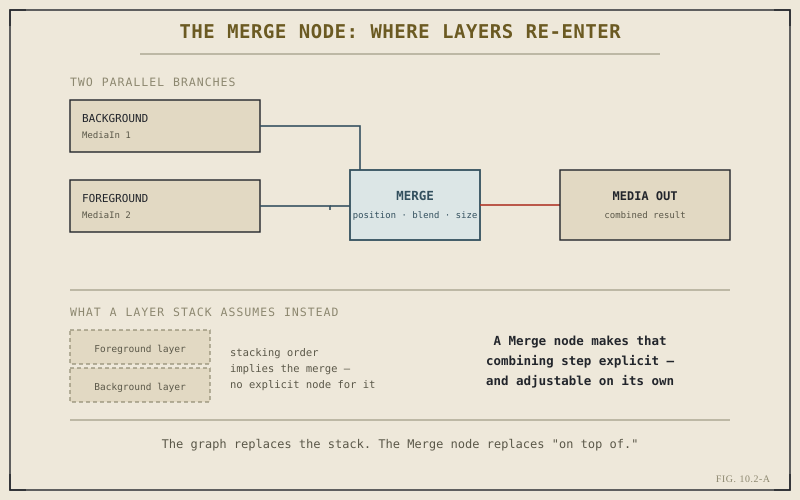

Chapter 1.3 introduced node graphs in the abstract, as the structural idea underneath both Color and Fusion. Chapter 10.1 promised this chapter would translate that idea into Fusion's specific vocabulary. This is that translation — and it centers on one node in particular, the Merge, because Merge is where Fusion's graph-based thinking actually confronts the same problem a layer stack was built to solve: putting one image on top of another.
A Quick Return to Chapter 1.3
Recall the core distinction: a layer stack is linear, one fixed order, each layer blind to everything beneath it. A node graph is a graph — any node's output can feed any other node's input, letting separate operations branch off the same source in parallel and recombine downstream. Fusion is where that idea is least abstract, because compositing is fundamentally about combining sources, and a graph gives you explicit, deliberate control over exactly how and where that combining happens, rather than leaving it implied by stacking order.
Sources on the Left, Output on the Right
A practical convention worth internalizing before anything else: Fusion's node editor reads left to right. Source nodes — footage, generated elements, a keyed matte — sit on the left. Every node downstream of them, however many there are, moves the composite closer to a finished result, ending at a MediaOut node on the right that hands the frame back to the Edit page or the render queue. This isn't a stylistic preference; it's a genuinely useful mental model for reading someone else's composition at a glance, sources on one side, finished frame on the other, everything in between showing exactly what happened along the way.
The Merge Node: Where "On Top Of" Lives
This is the node that makes Fusion's relationship to layer thinking concrete. A Merge node takes two inputs — conventionally labeled Background and Foreground — and combines them into one output, with explicit controls for position, size, and blend behavior between the two. In effect, it's a single, adjustable instance of what a layer stack does structurally and permanently: putting one image over another. The difference is that in Fusion, this act is a discrete, visible step in the graph, not an implicit consequence of where a layer happens to sit in a list.

The graph replaces the stack. The Merge node replaces "on top of."
A layer stack's "on top of" is a position in a list. A Merge node's "on top of" is a node with its own inputs, its own controls, and its own place in a graph you can rewire — the same relationship, made explicit instead of implied.
Why Order Still Matters Without a Fixed Stack
It would be a mistake to conclude that a graph makes order irrelevant. Two Merge nodes chained together still produce a specific, sequential result — whichever element is merged in first sits conceptually "underneath" whichever is merged in second, exactly the relationship a layer stack would express through position. What the graph changes isn't whether order matters; it's that order is now something you build deliberately, one Merge at a time, rather than something a fixed list structure imposes on every element whether the relationship fits or not. A composite with several elements that don't all relate to each other the same way — some meant to sit behind a subject, others in front, others independent overlays — is exactly the case Chapter 1.3 already flagged as awkward for a pure layer stack and native to a graph.
Serial Thinking Still Applies Here Too
Just as Chapter 1.3 noted for color grading, most real Fusion compositions aren't exotic branching structures — they're close to a straight line of Merge nodes, each one adding the next element on top of the combined result so far. A simple title composite might be nothing more than a background, a Text+ node, and one Merge joining them. The parallel, branching cases this chapter has emphasized are the real payoff of node thinking, but they're the exception in everyday work, not the norm — which is exactly why Chapter 10.1 called most shots simple, and why this chapter's ideas will feel familiar rather than exotic once you're actually building.
With the Merge node established as Fusion's answer to layering, Chapter 10.3 puts it to immediate use on the specific problem that made compositing necessary for most editors in the first place: keying a subject out of a green screen and merging it convincingly into a new background.
Key Concepts to Remember
- Fusion's node editor reads left to right — sources feeding in, a finished frame handed off through Media Out.
- The Merge node is Fusion's explicit version of "on top of" — the same relationship a layer stack expresses only through position.
- A graph doesn't remove order — it makes ordering a deliberate, per-Merge decision instead of a fixed structural rule applied to everything.
- Most real compositions are close to a straight chain of Merge nodes — branching structures are the payoff case, not the everyday one.
Cross-References Forward
| → Ch. 10.3 | Keying and Green Screen Basics — puts the Merge node to work on the problem that makes compositing necessary most often. |
| → Ch. 10.1 | Revisit what compositing adds on top of a finished, graded frame, before this chapter's node vocabulary for actually doing it. |
| → Ch. 1.3 | Revisit the node-based idea in its original, page-agnostic form, before this chapter narrowed it to Fusion specifically. |